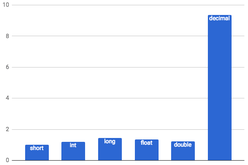

Os tipos internos (BultIn Types)
C#
BultIn Types
Performance em Aplicações C#
Introdução
Como nós sabemos, a linguagem de programação C# é fortemente tipada, tendo isso em vista é necessário que nossas variáveis e constantes sejam declaradas de acordo com o seu verdadeiro tipo. Vale lembrar, que tais tipos não são especificados pela linguagem do C# e sim no CLR pela plataforma .NET. Desse modo, a nomenclatura que demos em nossas linhas de código, como "int", "string" são aliases do .NET Framework. realizadas pelo C#.
Os tipos internos
Os tipos internos foram especificados para que declaramos nossas variáveis de acordo com o seu verdadeiro tipo. Veja a lista clicando aqui. Ou veja os mais importantes:
- byte É o nome do alias (nome representativo para referenciar outro nome, como um apelido) para System.Byte. Os valores que são suportados por esse tipo variam de 0 até 255.
- sbyte É o nome do alias para System.SByte. Os valores que são suportados por esse tipo variam de -128 até 127.
- char É o nome do alias para System.Char. Esse tipo não suportam valores e sim um único caractere.
- double É o nome do alias para System.Double. Esse tipo também é flutuante, e aceita mais casas decimais depois da vírgula que o decimal. O double é usado para números de escalas extremamente pequenas que exigem uma grande precisão e escalas muito grande como a distância entre planetas.
- float É o nome do alias para System.Single. Esse tipo também é flutuante, e aceita menos casas decimais depois da vírgula que o decimal e o double.
- int É o nome do alias para System.Int32. Esse tipo representa um inteiro que varia 2.147.483.648 negativos a 2.147.483.648 positivos.
- uint É o nome do alias para System.UInt32. Esse tipo representa um inteiro sem sinal que varia de 0 a 4.294.967.295
- short É o nome do alias para System.Int16. Esse tipo representa um inteiro com sinal que varia de 32768 negativo a 32767 positivo.
- ushort É o nome do alias para System.UInt16. Esse tipo representa um inteiro sem sinal que varia de 0 a 65535.
O que se pode se perceber com isso é que existem mais de um tipo que engloba o mesmo valor. Um exemplo é o número 5, podemos instanciá-los da seguinte forma:
short n1 = 5;
ushort n2 = 5;
int n3 = 5;
uint n4 = 5;
Isso acontece pelo fato de short ter um range de aproximadamente 30.000 inteiros negativos e 30.000 inteiros positivos, enquanto que ushort tem um range de aproximadamente 0 a 60.000 inteiros positivos, enquanto que int tem um range de aproximadamente 2 trilhões negativos a 2 trilhões positivos e enquanto que uint possui um range que varia de 0 a 4 trilhões positivos. Sendo assim, eles possuem range que se coincidem.
Apesar disso, saber qual tipo a ser instanciado é uma boa prática para que não ocorra operações desnecessárias sendo realizadas pelos processadores além de um uso desnecessário da memória.
O desenvolvedor Luiz Duarte realizou alguns testes sobre o custo de processamento de cada tipo em um mesmo valor, veja os resultados a seguir, retirado de seu artigo:
Como pode-se perceber o tipo decimal possui um alto custo de processamento, sendo, aproximadamente 9,5x mais custoso que o short.
Sendo assim, pode-se concluir que os tipos internos devem ser usados de acordo com a necessidade da aplicação, de modo a ter o menor custo para processamento e armazenamento de dados alocados na memória.
Vantagens do uso adequado do tipo interno
- Menor uso da memória.
- Menor custo de processamento.
Estouro da Variável
Isso ocorre quando o valor da variável excede o tamanho máximo suportado pelo tipo. Normalmente, a aplicação retornará um erro chamado como StackOverflowException ou OverflowException. Um exemplo é quando você possui uma variável denotada por um tipo como short e ocorre a tentativa de conversão de uma variável int para essa variável short em que seu valor excede o máximo suportado por short(+-32000).
Veja a seguir um código com erro proposital:
static void Main(string[] args)
{
int NUMERO = 50000;
try
{
short VALOR = Convert.ToInt16(NUMERO);
}
catch (OverflowException)
{
Console.WriteLine("Não foi possível realizar a operação");
}
}
A mensagem de erro que seria retornada caso não houvesse o catch:
System.OverflowException: Valor era muito grande ou muito pequeno para Int16.
Não é nada satisfatório um código com retorno em erro. Desse modo, caso você tenha clareza de que sua variável não excederá o range suportado por ela utilize normalmente, caso não, não arrisque, é muito mais custoso para o sistema um código retornando erro do que um código com o uso mínimo a mais de uma variável. Veja mais sobre nesse post do StackOverflow